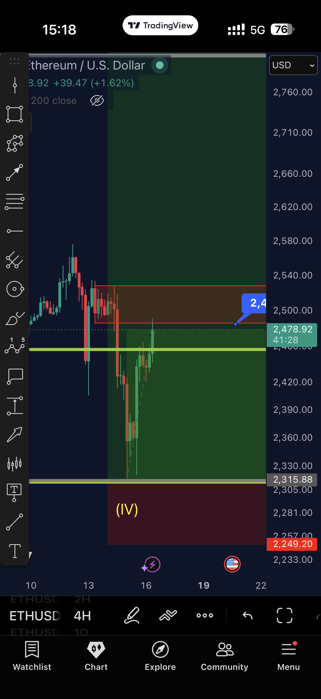
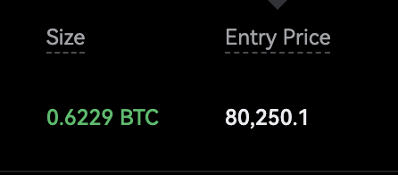
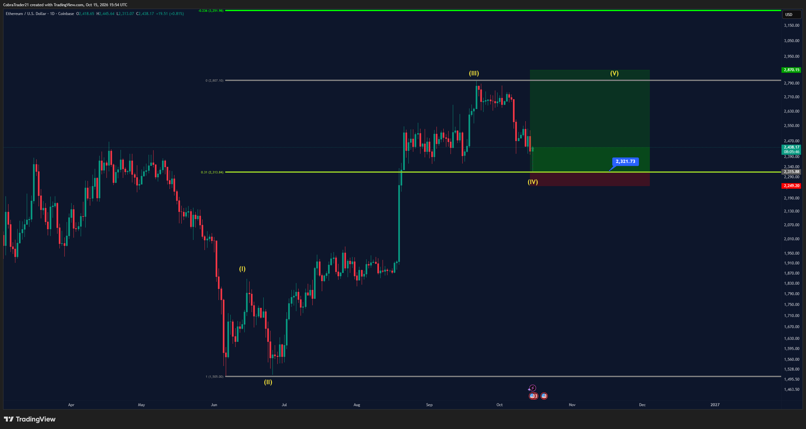

📡 Trades do Discord – 16/10/2026
Preços: BTC 81.591 · ETH 2.441 · SOL 104,33 · APT 0,8562 · ASTER 0,7060 · KAS 0,0369
- 🟠 Ordem limite pendente: o trade foi postado, mas o preço ainda não chegou na entrada.
- 🟢 Posição aberta: a entrada já foi executada e o trade está valendo.
- 🔴 Estopou: o preço bateu no stop e o trade foi encerrado com perda.
- 📐 Plano no gráfico: cenário desenhado pelo analista, ainda sem ordem.
- Entrada é o preço para entrar; stop é onde se sai se der errado; alvo é onde se realiza lucro. A barra mostra quão perto o preço está da entrada (cheia = quase lá). O sinal ≈ indica valor lido no gráfico.
CobraTrades #VIP-trades, Adaśko VIP e vip-cobra-updates
Trades VIP do Cobra. A cor da bolinha no nome do canal mostra o estado do trade.
NOVO vs ontem 19h: às 08:18 tirou mais 10% de lucro e disse que bateu zona de oferta (gráfico IMG_1990, preço ≈2.479). Stop segue na entrada (2.317); TP1 2.415 já smashado ontem; alvo restante 2.852. Preço ~2.441 — ainda bem acima da entrada (risco zero a zero). Long contra o 12h e o 1D se a divergência de baixa nos tempos maiores continuar válida.
Sem post novo no canal desde 15/10 12:06. Stop na entrada, TP1 110,7 ainda não reportado. Preço ~104,3. Long contra o 12h e o 1D.
NOVO: às 04:43 tirou outro 10% de lucro; às 05:30 disse "next level where I am looking to TP" sem número. Entrada/stop iguais. Sem par spot na Binance (Gate.io ≈0,0369).
Sem mudança: saiu na mão às 11h de 14/10. Sem novo BTC long.
Sem mudança desde 04/10. A favor do 12h e do 1D, mas longe (~8% acima; BTC ~81,6k).
Sem mudança desde 21/09. A favor do 12h e do 1D, longe.
Ordem antiga (13/08), sem atualização.
Sem atualização desde 17/09. Continua 🟢.
Sem canal APT em VIP-trades. Sem menção nova hoje. APT ≈0,856 na Binance.
Sem mudança desde 05/09. Preço ~0,71 — muito abaixo da entrada.
Sem mudança desde 25/09. Adaśko hoje (09:13–09:21) só comentou macro/ETF e "0.31" nos charts (texto, sem níveis de trade).
Jayson Casper #jayson-btc-ta
BTC perpétuo na Bybit. Valores com ≈ foram lidos do gráfico.
Nenhum post depois de 15/10 12:22. Entrada 80.250,1 confirmada no print (0,6229 BTC ≈ US$50k). Às 11:10 de ontem adicionou um pouco — tamanho e média novos NÃO postados. Stop/alvo ≈ do gráfico. Long contra o 12h e o 1D; o 4h de alta que ele citou é tempo menor.
Sem atualização. Sem níveis numéricos.
Plano antigo; sem novo post.
Sem novo post. BTC ~81,6k está perto dessa faixa, mas ele já está no long de 80.250.
Zona onde ele entrou (80.250).
Front-runado; sem mudança.
Sem mudança. A favor do 12h e do 1D. Longe.
Sem mudança. A favor do tempo gráfico maior.
Histórico; encerrado em 12/10.
- O que há de novo desde ontem 19h: Cobra tirou mais 10% em KAS (04:43) e em ETH long 2 (08:18), com gráfico de ETH na zona de oferta; às 05:30 falou de próximo nível de TP em KAS sem número. Em vip-cobra-updates (11:48) disse que OI sobe, ETH "limpo", BTC incerto. Adaśko postou ETF/F&G e comentários de chart (0.31) sem níveis de trade. Jayson: zero posts depois de 15/10 12:22.
- Bolinha dos canais: nenhuma mudou (ETH/SOL/KAS 🟢, BTC long 🔴, shorts 🟠). Nenhum trade novo e nenhum nível de entrada/stop alterado.
- Pela regra do tempo gráfico maior: se 12h e 1D de BTC/ETH/SOL seguirem com divergência de baixa confirmada, os longs abertos (Cobra ETH/SOL/KAS e Jayson) vão contra essa leitura; o short pendente do Cobra e os planos de short do Jayson (84.300 / topo da range / swing) vão a favor, mas ainda longe do preço (~81,6k).
- Nenhum alerta novo no TradingView: não houve trade novo nem mudança de entrada pendente. Seguem os antigos COBRA/JAYSON (não apagados). Alertas de entradas já filladas (ETH 2.317, SOL 101,37, Jayson long alt 80.300) continuam sem sentido operacional, mas ficam na lista.

Cobra, 16/10 08:18: ETH long 2 — mais 10% de lucro e zona de oferta (IMG_1990).

Jayson, 15/10 10:37: long 0,6229 BTC @ 80.250,1 — ainda aberto (sem post novo hoje).

Cobra, 15/10 12:54: ETH long 2 — contexto do stop na entrada e TP1 smashado.

Cobra, 15/10 12:06: SOL — stop na entrada (ainda válido).